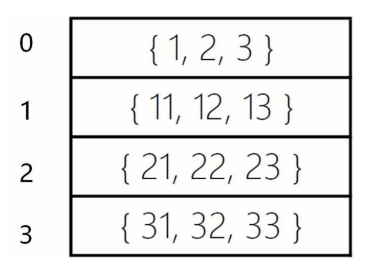
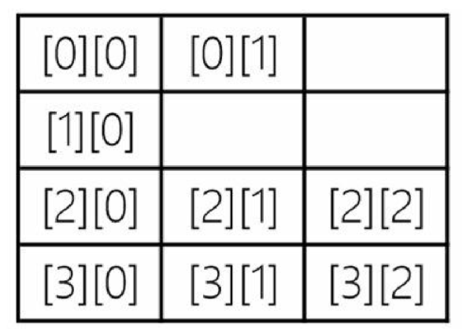

4.2. 二维数组的创建和使用¶
4.2.1. 创建二维数组¶
当数组中每个元素又可以带有多个下标时，这种数组就是“多维数组”。
Java中声明二维数组需要有两个中括号，具体有三种语法如下：
元素数据类型[][] 数组变量名;
元素数据类型 数组变量名[][];
元素数据类型[] 数组变量名[];
三种形式中前两种比较好理解，最后一种形式看起来有些古怪。数组声明示例如下：
int[][] array1;
int array1[][];
int[] array1[];
4.2.2. 二维数组初始化¶
二维数组的初始化也可以分为静态初始化和动态初始化。
静态初始化
静态初始化示例如下：
int intArray[][] = { { 1, 2, 3 }, { 11, 12, 13 }, { 21, 22, 23 }, { 31, 32, 33 } };
intArray二维数组

动态初始化 动态初始化二维数组语法如下：
new 元素数据类型[高维数组长度] [低维数组长度] ;
高维数组就是最外面的数组，低维数组是每一个元素的数组。动态创建并初始化一个4×3二维数 组示例代码如下：
int[][] intArray = new int[4][3];
4.2.3. 不规则数组¶
动态初始化不规则数组比较麻烦，不能使用new int[4][3]语句，而是先初始化高维数组，然后再分别逐个初始化低维数组。代码如下：
int intArray[][] = new int[4][]; //先初始化高维数组为4
//逐一初始化低维数组
intArray[0] = new int[2];
intArray[1] = new int[1];
intArray[2] = new int[3];
intArray[3] = new int[3];

不规则数组访问¶
提示 下标越界异常（ArrayIndexOutOfBoundsException）是试图访问不存在的下标时引发的。例如一个一维array数组如果有10个元素，那么表达式array[10]就会发生下标越界异常，这是因为数组下标是从0开始的，最后一个元素下标是数组长度减1，所以array[10]访问的元素是不存在的。
不规则数组的示例：
package com.company2;
public class Main {
public static void main(String[] args) {
int intArray[][] = new int[4][]; //先初始化高维数组为4
//逐一初始化低维数组
intArray[0] = new int[2];
intArray[1] = new int[1];
intArray[2] = new int[3];
intArray[3] = new int[3];
//for循环遍历
for (int i = 0; i < intArray.length; i++) {
for (int j = 0; j < intArray[i].length; j++) {
intArray[i][j] = i + j;
}
}
//for-each循环遍历
for (int[] row : intArray) {
for (int column : row) {
System.out.print(column);
//在元素之间添加制表符，
System.out.print('\t');
}
//一行元素打印完成后换行
System.out.println();
}
//System.out.println(intArray[0][2]); //发生运行期错误 ③
}
}
/*
0 1
1
2 3 4
3 4 5
*/
4.2.4. 二维数组代码示例¶
二维数组示例如下：
package com.company2;
public class Main {
public static void main(String[] args) {
// 静态初始化二维数组
int[][] intArray = {
{1, 2, 3},
{11, 12, 13},
{21, 22, 23},
{31, 32, 33}};
// 动态初始化二维数组
double[][] doubleArray = new double[4][3];
// 计算数组intArray元素的平方根，结果保存到doubleArray
for (int i = 0; i < intArray.length; i++) {
for (int j = 0; j < intArray[i].length; j++) {
// 计算平方根
doubleArray[i][j] = Math.sqrt(intArray[i][j]);
}
}
// 打印数组doubleArray
for (int i = 0; i < doubleArray.length; i++) {
for (int j = 0; j < doubleArray[i].length; j++) {
System.out.printf("[%d][%d] = %f", i, j, doubleArray[i][j]);
System.out.print('\t');
}
System.out.println();
}
}
}
/*
[0][0] = 1.000000 [0][1] = 1.414214 [0][2] = 1.732051
[1][0] = 3.316625 [1][1] = 3.464102 [1][2] = 3.605551
[2][0] = 4.582576 [2][1] = 4.690416 [2][2] = 4.795832
[3][0] = 5.567764 [3][1] = 5.656854 [3][2] = 5.744563 */
eg
public class Deam2 {
public static void main(String[] args) {
// 定义一个二维数组，行数为4行
char arr[][] = new char[4][];
// 对二维数组的每一行进行赋值
arr[0]=new char[] {'春','明','不','觉','晓'};
arr[1]=new char[] {'处','处','闻','啼','鸟'};
arr[2]=new char[] {'夜','来','风','雨','声'};
arr[3]=new char[] {'花','落','知','多','少'};
System.out.println("-----------横版------------------------");
// 遍历数组 i为横向下标， 行 0、1、2、3
for (int i = 0; i < arr.length; i++) {
// System.out.println(i);
// 遍历数组j，纵向下标，列 0、1、2、3、4
for (int j = 0; j < arr[i].length; j++) {
System.out.print(arr[i][j]);
}
if (i%2==0) {
System.out.println(",");
}
else {
System.out.println("。");
}
}
System.out.println("---------------竖版-----------------");
// 打印j，j的值为 0、1、2、3、4
for (int j = 0; j < arr[0].length; j++) {
// 打印i，i的值为3、2、1、0
for (int i = 3; i >= 0; i--) {
//获取arr[][]数组中的值
System.out.print(arr[i][j]);
}
System.out.println();
}
System.out.println("。，。，");
}
}
//输出结果
-----------横版------------------------
春明不觉晓,
处处闻啼鸟。
夜来风雨声,
花落知多少。
---------------竖版-----------------
花夜处春
落来处明
知风闻不
多雨啼觉
少声鸟晓
。，。，